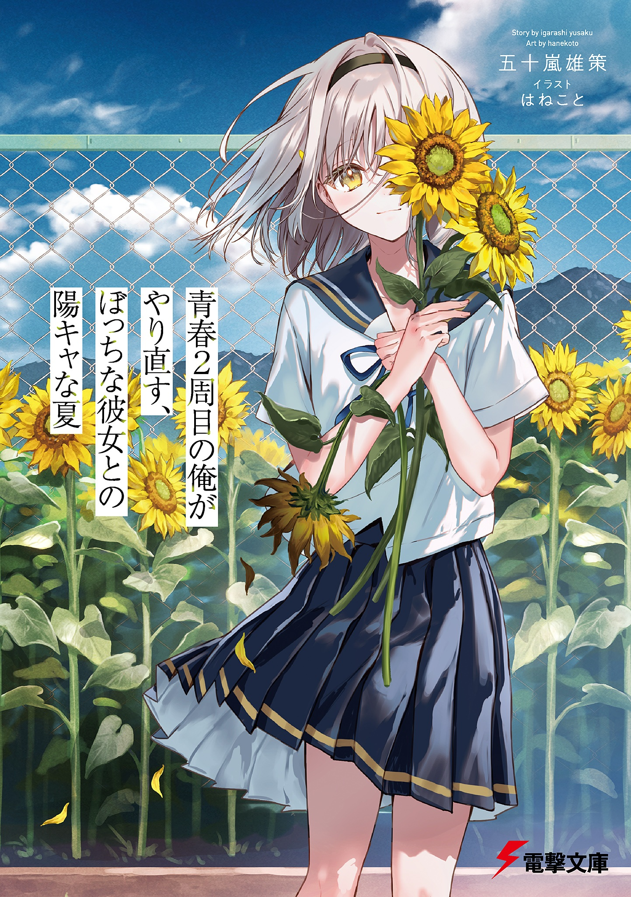

Redoing My Youth A Second Time, A Cheery Summer With A Lonely Girl
Novel Info's
Status: Ongoing
Genre: Comedy, Drama, Fantasy, Romance, Slice of Life
Author: Igarashi Yuusaku
Illustrator: Hanekoto
Volumes: 1
Original Publisher: Dengeki Bunko & Kadokawa
English Publisher: N/A
Fan Translation: KineMTL
Description/Sypnosis
Confessing to my first love, once again. With time rewinding, I can redo the youth of that summer!
When I woke up, I had returned to my junior high school self─.
My job was going nowhere, I had no money, and though I was popular with women, I’d become a worthless adult who had given up on my dreams. I blamed everything on my life during junior high school, and in particular, on her—Akimiya Hazumi, my first love. Just when I was grumbling about this, I was involved in an accident and found myself time-leaping back to my junior high school days. Back then, I was a nondescript mob character, but now I had groomed my appearance and unleashed my adult social skills. Before I knew it, I was successfully reliving my ideal youth! Using my memories from the past, I managed to save the beautiful gal, Chigasaki, on my way to school, and cleared the troubles among the popular boys and girls in my class.
All that was left was to uncover and change the truth behind the incident from “that summer” when the sunflowers were in full bloom—an incident involving Akimiya Hazumi, the root cause of the downfall in my life─.
Download Links
Epub & Pdf